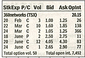
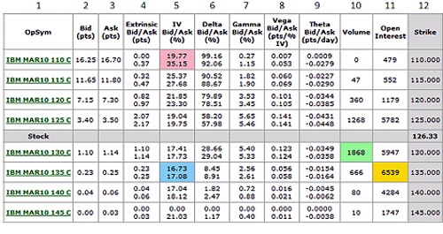

Nowadays, many investors' portfolios include investments such as mutual funds, stocks and bonds. But the variety of securities you have at your disposal does not end there. Another type of security, called an option, presents a world of opportunity to sophisticated investors.
The power of options lies in their versatility. They enable you to adapt or adjust your position according to any situation that arises. Options can be as speculative or as conservative as you want. This means you can do everything from protecting a position from a decline to outright betting on the movement of a market or index.
This versatility, however, does not come without its costs. Options are complex securities and can be extremely risky. This is why, when trading options, you'll see a disclaimer like the following:
Options involve risks and are not suitable for everyone. Option trading can be speculative in nature and carry substantial risk of loss. Only invest with risk capital.
Despite what anybody tells you, option trading involves risk, especially if you don't know what you are doing. Because of this, many people suggest you steer clear of options and forget their existence.
On the other hand, being ignorant of any type of investment places you in a weak position. Perhaps the speculative nature of options doesn't fit your style. No problem - then don't speculate in options. But, before you decide not to invest in options, you should understand them. Not learning how options function is as dangerous as jumping right in: without knowing about options you would not only forfeit having another item in your investing toolbox but also lose insight into the workings of some of the world's largest corporations. Whether it is to hedge the risk of foreign-exchange transactions or to give employees ownership in the form of stock options, most multi-nationals today use options in some form or another.
This tutorial will introduce you to the fundamentals of options. Keep in mind that most options traders have many years of experience, so don't expect to be an expert immediately after reading this tutorial. If you aren't familiar with how the stock market works, check out the Stock Basics tutorial.
An option is a contract that gives the buyer the right, but not the obligation, to buy or sell an underlying asset at a specific price on or before a certain date. An option, just like a stock or bond, is a security. It is also a binding contract with strictly defined terms and properties.
Still confused? The idea behind an option is present in many everyday situations. Say, for example, that you discover a house that you'd love to purchase. Unfortunately, you won't have the cash to buy it for another three months. You talk to the owner and negotiate a deal that gives you an option to buy the house in three months for a price of $200,000. The owner agrees, but for this option, you pay a price of $3,000.
Now, consider two theoretical situations that might arise:
This example demonstrates two very important points. First, when you buy an option, you have a right but not an obligation to do something. You can always let the expiration date go by, at which point the option becomes worthless. If this happens, you lose 100% of your investment, which is the money you used to pay for the option. Second, an option is merely a contract that deals with an underlying asset. For this reason, options are called derivatives, which means an option derives its value from something else. In our example, the house is the underlying asset. Most of the time, the underlying asset is a stock or an index.
Calls and Puts
The two types of options are calls and puts:
Participants in the Options Market
There are four types of participants in options markets depending on the position they take:
People who buy options are called holders and those who sell options are called writers; furthermore, buyers are said to have long positions, and sellers are said to have short positions.
Here is the important distinction between buyers and sellers:
Don't worry if this seems confusing - it is. For this reason we are going to look at options from the point of view of the buyer. Selling options is more complicated and can be even riskier. At this point, it is sufficient to understand that there are two sides of an options contract.
The Lingo
To trade options, you'll have to know the terminology associated with the options market.
The price at which an underlying stock can be purchased or sold is called the strike price. This is the price a stock price must go above (for calls) or go below (for puts) before a position can be exercised for a profit. All of this must occur before the expiration date.
An option that is traded on a national options exchange such as the Chicago Board Options Exchange (CBOE) is known as a listed option. These have fixed strike prices and expiration dates. Each listed option represents 100 shares of company stock (known as a contract).
For call options, the option is said to be in-the-money if the share price is above the strike price. A put option is in-the-money when the share price is below the strike price. The amount by which an option is in-the-money is referred to as intrinsic value.
The total cost (the price) of an option is called the premium. This price is determined by factors including the stock price, strike price, time remaining until expiration (time value) and volatility. Because of all these factors, determining the premium of an option is complicated and beyond the scope of this tutorial.
There are two main reasons why an investor would use options: to speculate and to hedge.
Speculation
You can think of speculation as betting on the movement of a security. The advantage of options is that you aren't limited to making a profit only when the market goes up. Because of the versatility of options, you can also make money when the market goes down or even sideways.
Speculation is the territory in which the big money is made - and lost. The use of options in this manner is the reason options have the reputation of being risky. This is because when you buy an option, you have to be correct in determining not only the direction of the stock's movement, but also the magnitude and the timing of this movement. To succeed, you must correctly predict whether a stock will go up or down, and you have to be right about how much the price will change as well as the time frame it will take for all this to happen. And don't forget commissions! The combinations of these factors means the odds are stacked against you.
So why do people speculate with options if the odds are so skewed? Aside from versatility, it's all about using leverage. When you are controlling 100 shares with one contract, it doesn't take much of a price movement to generate substantial profits.
Hedging
The other function of options is hedging. Think of this as an insurance policy. Just as you insure your house or car, options can be used to insure your investments against a downturn. Critics of options say that if you are so unsure of your stock pick that you need a hedge, you shouldn't make the investment. On the other hand, there is no doubt that hedging strategies can be useful, especially for large institutions. Even the individual investor can benefit. Imagine that you wanted to take advantage of technology stocks and their upside, but say you also wanted to limit any losses. By using options, you would be able to restrict your downside while enjoying the full upside in a cost-effective way. (For more on this, see Married Puts: A Protective Relationship and A Beginner's Guide To Hedging.)
A Word on Stock Options
Although employee stock options aren't available to everyone, this type of option could, in a way, be classified as a third reason for using options. Many companies use stock options as a way to attract and to keep talented employees, especially management. They are similar to regular stock options in that the holder has the right but not the obligation to purchase company stock. The contract, however, is between the holder and the company, whereas a normal option is a contract between two parties that are completely unrelated to the company. (To learn more, see The "True" Cost Of Stock Options.)
Now that you know the basics of options, here is an example of how they work. We'll use a fictional firm called Cory's Tequila Company.
Let's say that on May 1, the stock price of Cory's Tequila Co. is $67 and the premium (cost) is $3.15 for a July 70 Call, which indicates that the expiration is the third Friday of July and the strike price is $70. The total price of the contract is $3.15 x 100 = $315. In reality, you'd also have to take commissions into account, but we'll ignore them for this example.
Remember, a stock option contract is the option to buy 100 shares; that's why you must multiply the contract by 100 to get the total price. The strike price of $70 means that the stock price must rise above $70 before the call option is worth anything; furthermore, because the contract is $3.15 per share, the break-even price would be $73.15.
When the stock price is $67, it's less than the $70 strike price, so the option is worthless. But don't forget that you've paid $315 for the option, so you are currently down by this amount.
Three weeks later the stock price is $78. The options contract has increased along with the stock price and is now worth $8.25 x 100 = $825. Subtract what you paid for the contract, and your profit is ($8.25 - $3.15) x 100 = $510. You almost doubled our money in just three weeks! You could sell your options, which is called "closing your position," and take your profits - unless, of course, you think the stock price will continue to rise. For the sake of this example, let's say we let it ride.
By the expiration date, the price drops to $62. Because this is less than our $70 strike price and there is no time left, the option contract is worthless. We are now down to the original investment of $315.
To recap, here is what happened to our option investment:
| Date | May 1 | May 21 | Expiry Date |
| Stock Price | $67 | $78 | $62 |
| Option Price | $3.15 | $8.25 | worthless |
| Contract Value | $315 | $825 | $0 |
| Paper Gain/Loss | $0 | $510 | -$315 |
The price swing for the length of this contract from high to low was $825, which would have given us over double our original investment. This is leverage in action.
Exercising Versus Trading-Out
So far we've talked about options as the right to buy or sell (exercise) the underlying. This is true, but in reality, a majority of options are not actually exercised.
In our example, you could make money by exercising at $70 and then selling the stock back in the market at $78 for a profit of $8 a share. You could also keep the stock, knowing you were able to buy it at a discount to the present value.
However, the majority of the time holders choose to take their profits by trading out (closing out) their position. This means that holders sell their options in the market, and writers buy their positions back to close. According to the CBOE, about 10% of options are exercised, 60% are traded out, and 30% expire worthless.
Intrinsic Value and Time Value
At this point it is worth explaining more about the pricing of options. In our example the premium (price) of the option went from $3.15 to $8.25. These fluctuations can be explained by intrinsic value and time value.
Basically, an option's premium is its intrinsic value + time value. Remember, intrinsic value is the amount in-the-money, which, for a call option, means that the price of the stock equals the strike price. Time value represents the possibility of the option increasing in value. So, the price of the option in our example can be thought of as the following:
| Premium = | Intrinsic Value | + | Time Value |
| $8.25 = | $8 | + | $0.25 |
In real life options almost always trade above intrinsic value. If you are wondering, we just picked the numbers for this example out of the air to demonstrate how options work.
There are two main types of options:
The distinction between American and European options has nothing to do with geographic location.
Long-Term Options
So far we've only discussed options in a short-term context. There are also options with holding times of one, two or multiple years, which may be more appealing for long-term investors.
These options are called long-term equity anticipation securities (LEAPS). By providing opportunities to control and manage risk or even to speculate, LEAPS are virtually identical to regular options. LEAPS, however, provide these opportunities for much longer periods of time. Although they are not available on all stocks, LEAPS are available on most widely held issues.
Exotic Options
The simple calls and puts we've discussed are sometimes referred to as plain vanilla options. Even though the subject of options can be difficult to understand at first, these plain vanilla options are as easy as it gets!
Because of the versatility of options, there are many types and variations of options. Non-standard options are called exotic options, which are either variations on the payoff profiles of the plain vanilla options or are wholly different products with "option-ality" embedded in them. (To learn more, see Becoming Fluent In Options And Futures and What's the difference between a regular option and an exotic option?)
As more and more traders have learned of the multitude of potential benefits available to them via the use of options, the trading volume in options has proliferated over the years. This trend has also been driven by the advent of electronic trading and data dissemination. Some traders use options to speculate on price direction, others to hedge existing or anticipated positions and others still to craft unique positions that offer benefits not routinely available to the trader of just the underlying stock, index or futures contract (for example, the ability to make money if the underlying security remains relatively unchanged). Regardless of their objective, one of the keys to success is to pick the right option, or combination of options, needed to create a position with the desired risk-to-reward tradeoff(s). As such, today's savvy option trader is typically looking at a more sophisticated set of data when it comes to options than the traders of decades past.
The Old Days of Option Price Reporting
In "the old days" some newspapers used to list rows and rows of nearly indecipherable option price data deep within its financial section such as that displayed in Figure 1.
|  |
| Figure 1: Option data from
a newspaper |
Investor's Business Daily and the Wall Street Journal still include a partial listing of option data for many of the more active optionable stocks. The old newspaper listings included mostly just the basics – a "P" or a "C" to indicate if the option a call or a put, the strike price, the last trade price for the option, and in some cases, volume and open interest figures. And while this was all well and good, many of today's option traders have a greater understanding of the variables that drive option trades. Among these variables are a number of "Greek" values derived from an option pricing model, implied option volatility and the all important bid/ask spread. (Learn more in Using the Greeks to Understand Options.)
As a result, more and more traders are finding option data via on-line sources. While each source has its own format for presenting the data, the key variables generally include those listed in Figure 2. The option listing shown in Figure 2 is from Optionetics Platinum software. The variables listed are the ones most looked at by today's better educated option trader.
|  |
| Figure 2: March call options for IBM |
The data provided in Figure 2 provides the following information:
Column 1 – OpSym: this field designates the underlying stock symbol (IBM), the contract month and year (MAR10 means March of 2010), the strike price (110, 115, 120, etc.) and whether it is a call or a put option (a C or a P).
Column 2 – Bid (pts): The "bid" price is the latest price offered by a market maker to buy a particular option. What this means is that if you enter a "market order" to sell the March 2010, 125 call, you would sell it at the bid price of $3.40.
Column 3 – Ask (pts): The "ask" price is the latest price offered by a market maker to sell a particular option. What this means is that if you enter a "market order" to buy the March 2010, 125 call, you would buy it at the ask price of $3.50.
NOTE: Buying at the bid and selling at the ask is how market makers make their living. It is imperative for an option trader to consider the difference between the bid and ask price when considering any option trade. The more active the option, typically the tighter the bid/ask spread. A wide spread can be problematic for any trader, especially a short-term trader. If the bid is $3.40 and the ask is $3.50, the implication is that if you bought the option one moment (at $3.50 ask) and turned around and sold it an instant later (at $3.40 bid), even though the price of the option did not change, you would lose -2.85% on the trade ((3.40-3.50)/3.50).
Column 4 – Extrinsic Bid/Ask (pts): This column displays the amount of time premium built into the price of each option (in this example there are two prices, one based on the bid price and the other on the ask price). This is important to note because all options lose all of their time premium by the time of option expiration. So this value reflects the entire amount of time premium presently built into the price of the option.
Column 5 – Implied Volatility (IV) Bid/Ask (%): This value is calculated by an option pricing model such as the Black-Scholes model, and represents the level of expected future volatility based on the current price of the option and other known option pricing variables (including the amount of time until expiration, the difference between the strike price and the actual stock price and a risk-free interest rate). The higher the IV Bid/Ask (%)the more time premium is built into the price of the option and vice versa. If you have access to the historical range of IV values for the security in question you can determine if the current level of extrinsic value is presently on the high end (good for writing options) or low end (good for buying options).
Column 6 – Delta Bid/Ask (%): Delta is a Greek value derived from an option pricing model and which represents the "stock equivalent position" for an option. The delta for a call option can range from 0 to 100 (and for a put option from 0 to -100). The present reward/risk characteristics associated with holding a call option with a delta of 50 is essentially the same as holding 50 shares of stock. If the stock goes up one full point, the option will gain roughly one half a point. The further an option is in-the-money, the more the position acts like a stock position. In other words, as delta approaches 100 the option trades more and more like the underlying stock i.e., an option with a delta of 100 would gain or lose one full point for each one dollar gain or loss in the underlying stock price. (For more check out Using the Greeks to Understand Options.)
Column 7 – Gamma Bid/Ask (%): Gamma is another Greek value derived from an option pricing model. Gamma tells you how many deltas the option will gain or lose if the underlying stock rises by one full point. So for example, if we bought the March 2010 125 call at $3.50, we would have a delta of 58.20. In other words, if IBM stock rises by a dollar this option should gain roughly $0.5820 in value. In addition, if the stock rises in price today by one full point this option will gain 5.65 deltas (the current gamma value) and would then have a delta of 63.85. From there another one point gain in the price of the stock would result in a price gain for the option of roughly $0.6385.
Column 8 – Vega Bid/Ask (pts/% IV): Vega is a Greek value that indicates the amount by which the price of the option would be expected to rise or fall based solely on a one point increase in implied volatility. So looking once again at the March 2010 125 call, if implied volatility rose one point – from 19.04% to 20.04%, the price of this option would gain $0.141. This indicates why it is preferable to buy options when implied volatility is low (you pay relatively less time premium and a subsequent rise in IV will inflate the price of the option) and to write options when implied volatility is high (as more premium is available and a subsequent decline in IV will deflate the price of the option).
Column 9 – Theta Bid/Ask (pts/day): As was noted in the extrinsic value column, all options lose all time premium by expiration. In addition, "time decay" as it is known, accelerates as expiration draws closer. Theta is the Greek value that indicates how much value an option will lose with the passage of one day's time. At present, the March 2010 125 Call will lose $0.0431 of value due solely to the passage of one day's time, even if the option and all other Greek values are otherwise unchanged.
Column 10 – Volume: This simply tells you how many contracts of a particular option were traded during the latest session. Typically – though not always - options with large volume will have relatively tighter bid/ask spreads as the competition to buy and sell these options is great.
Column 11 – Open Interest: This value indicates the total number of contracts of a particular option that have been opened but have not yet been offset.
Column 12 – Strike: The "strike price" for the option in question. This is the price that the buyer of that option can purchase the underlying security at if he chooses to exercise his option. It is also the price at which the writer of the option must sell the underlying security if the option is exercised against him.
A table for the respective put options would similar, with two primary differences:
With puts, it is just the opposite. As the strike prices go higher, put options become either less-out-of-the-money or more in-the-money and thus accrete more intrinsic value. Thus with puts the option prices are greater as the strike prices rise.
Option trading and the sophistication level of the average option trader have come a long way since option trading began decades ago. Today's option quote screen reflects these advances.
We hope this tutorial has given you some insight into the world of options. Once again, we must emphasize that options aren't for all investors. Options are sophisticated trading tools that can be dangerous if you don't educate yourself before using them. Please use this tutorial as it was intended - as a starting point to learning more about options.
Let's recap:
{kind=link}
{kind=link}